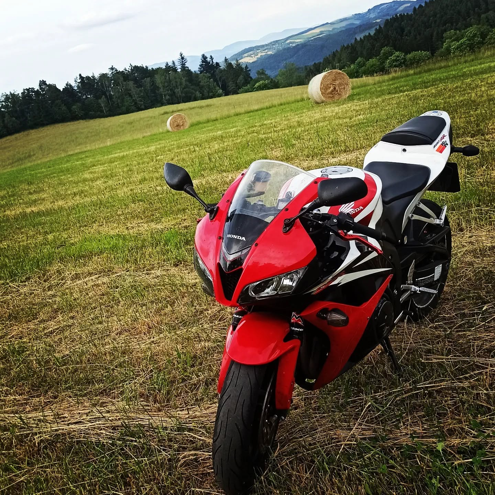
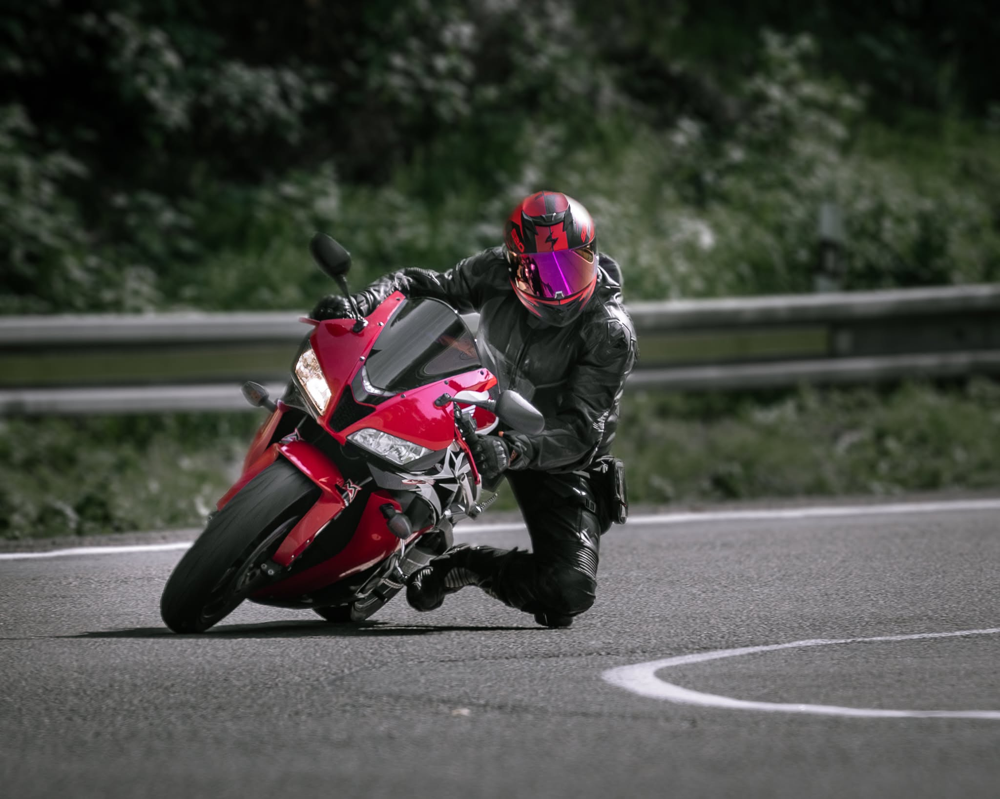
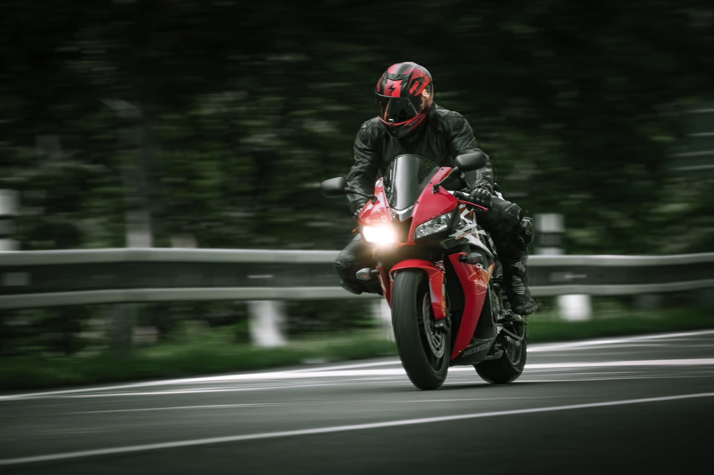
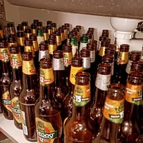

Galerie
Fotky, co jsem sem nahrál, než mi došlo, že jedna z nich je bedna piv místo motorky. Umění výběru na vrcholu.




Fotky, co jsem sem nahrál, než mi došlo, že jedna z nich je bedna piv místo motorky. Umění výběru na vrcholu.



